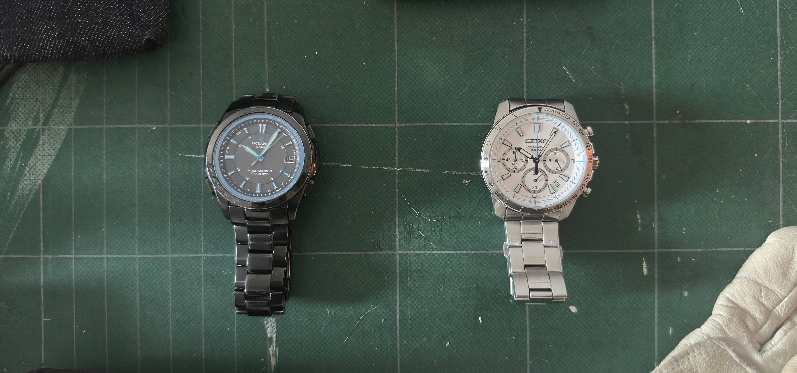

jul 13 2025
I'm not really a watch guy. I don't have a grail watch or anything—I have these two simply because they were gifts. Still, they're my favorite thing to put on every day.
Until recently, my daily was an Apple Watch Series 7, also a gift that I've worn since 2021. Over time, I started to question whether I actually benefit from the utility of having a computer strapped to my body. The Apple Watch is just your iPhone that's constantly in your face. I started to get aggravated from every single notifcation and text that would tap me on the wrist. Now, I only take out the Apple Watch to track workouts and to wake me up in the morning. Plus, it's pretty ugly.
Now that I've fixed up these two, my outfits feel complete. Who knew wearing cool watches is like aurafarming.
Respect to smartwatches though, they save lives.
My grandfather gifted me this watch circa 2015, I think from some Bic Camera in Tokyo. I wore it through most of middle and high school. It's a solar watch with atomic timekeeping, which confused me when I was younger so I would haphazardly mash the four buttons until it would sync.
I recently charged this guy back up but had trouble establishing connection with WWVB in Fort Collins. It was probably user error, but it would time out every time I tried. I read online that others had luck syncing their radio watches with apps. "radio watch sync" worked like a charm, and I recommend the Android version because you can activate "beast mode" with ads, instead of a paid upgrade like on iOS. Also, do the syncing when no one is around because I think you want the volume to be loud and I upset my girlfriend doing this.
Maybe because the watch wasn't charged for a long time, but the date is behind by three days, no matter how many times I tried to re-sync. It doesn't bother me though.
I really appreciate that this watch is ultra time-accurate, and I never have to worry about accidentally turning the crown. It's been my go-to for casually heading out.
Gifted to me by my dad on my 18th birthday. What you would expect to be a blue second hand is actually for the stopwatch. It uses quartz timing (whatever that means) and when you reset the stopwatch you can't even see the hand move—it's an instant reset.
I had stopped wearing this a few years ago because the battery died. I took it to Watch Hospital in Houston, and they had it ready in 15 minutes.
I think this watch has such a professional feel. I've worn this to many job interviews, and I've been wearing it frequently to work.
last edited jul 13 2025